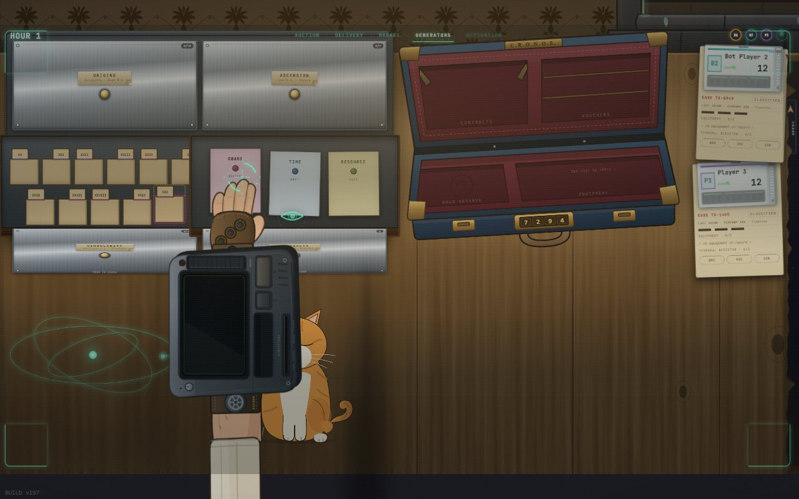
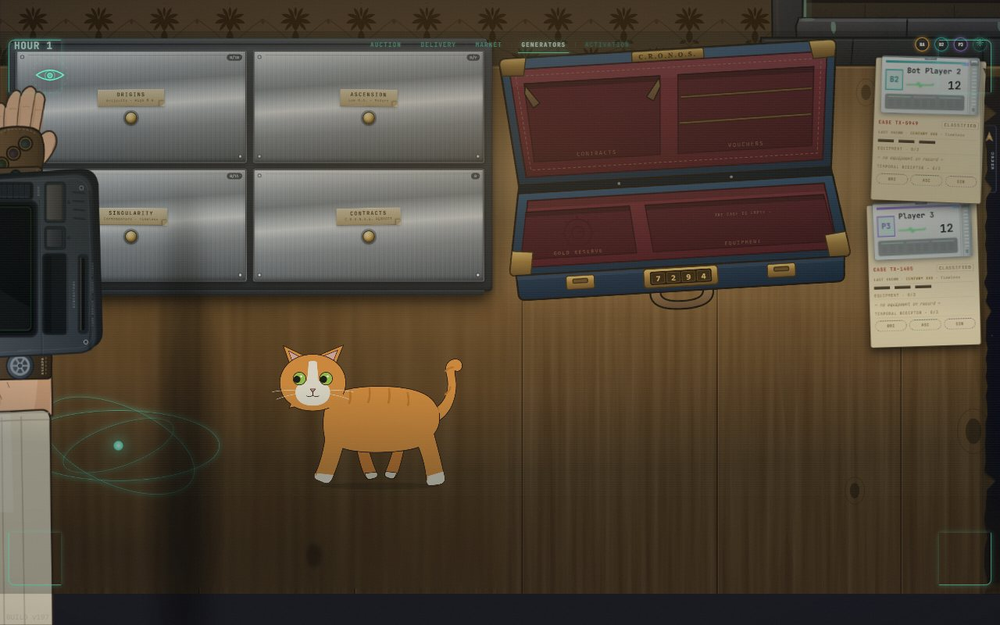
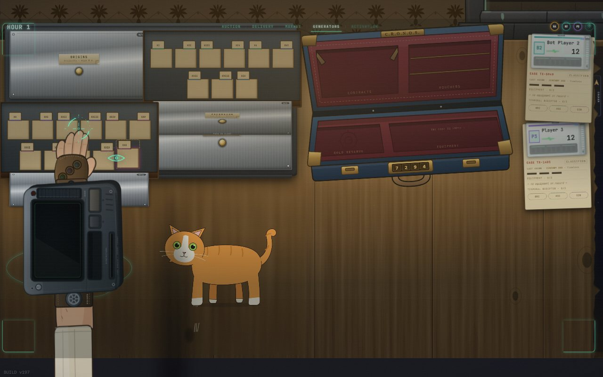
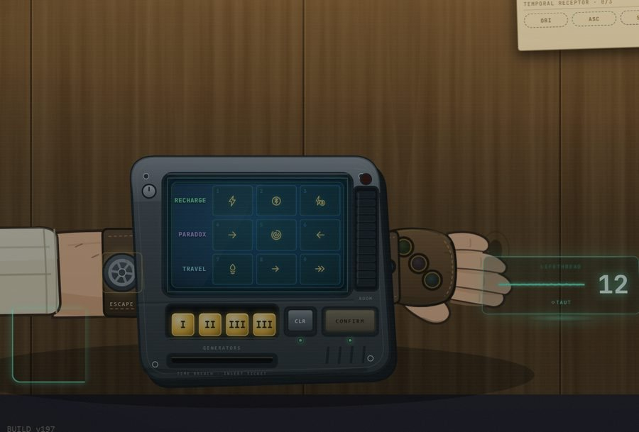
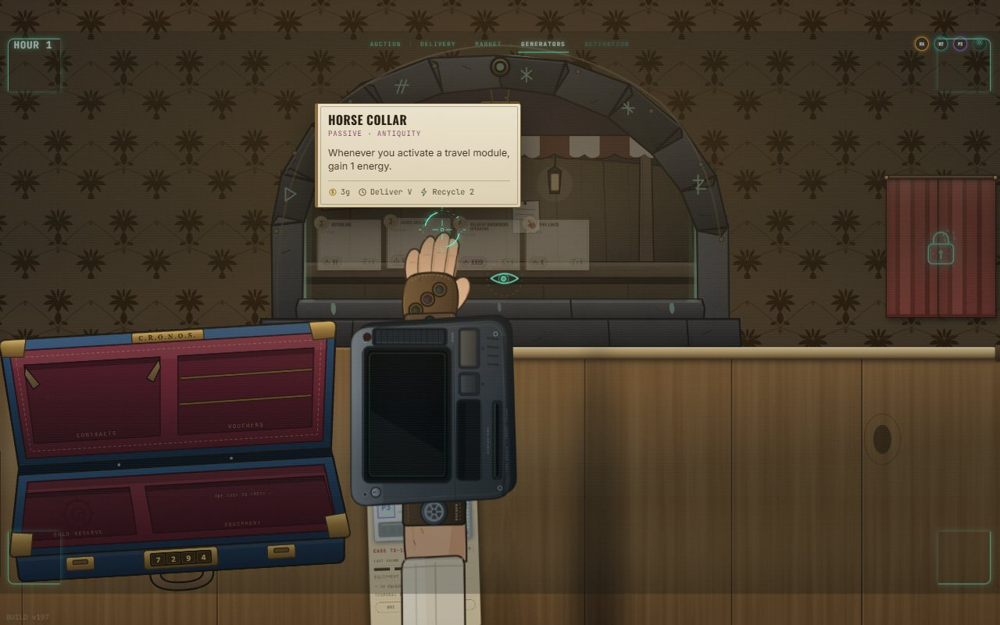
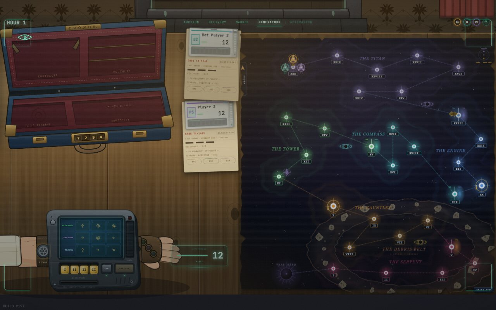

A premissa
Devolver a história ao lugar de onde ela foi arrancada
A linha do tempo é uma trilha única: os séculos I até XXX, e o Ano Zero como um espaço à parte, logo depois do século I. Dá para andar nos dois sentidos, mas os dois sentidos não custam o mesmo. Ir para o futuro é de graça. Ir para o passado tira energia de você. Cada viajante começa com quatro vezes o número de jogadores em energia, e é só isso que existe.
Aí está o aperto que organiza a partida inteira. Os objetos antigos, os que valem lore e os que a mesa mais quer, moram lá atrás, perto da origem. O caminho até eles é justamente o caminho que sangra. O futuro é seguro, barato e pobre; o passado é caro e é onde está tudo.
Zerar a energia é ser Terminado, e a elegância está em não ser uma eliminação. Seus objetos equipados são reciclados, você é devolvido ao século XXX com doze de energia mais a soma do que reciclou, e mantém ouro e paradoxos. Fica fora só o resto daquela Hora. Da Hora seguinte em diante joga normalmente: pode comprar, entregar, cumprir contrato e vencer a partida. No fim das contas ser Terminado custa exatamente um ponto, o ponto de sobrevivência.
E quem volta volta com salvo-conduto: enquanto estiver no Período Atemporal, do século XXIV para a frente, é imune a perda de energia. Essa imunidade se gasta de vez no instante em que o viajante pisa de novo na era Contemporânea. A morte te devolve à ponta segura e pobre da linha e te dá um fôlego que termina exatamente quando você decide voltar para onde as coisas valem.
Espalhado por essa trilha existe um mercado que se move. Ele vende objetos arrancados da história humana e soltos no tempo. Você os compra e os carrega até o século exato de onde vieram, não basta estar na era certa. Entregar conserta aquele pedaço da linha e paga Pontos de Contrato. Quem tiver mais quando o tempo estabilizar é coroado Monarca do Tempo.
O nome do jogo é a mecânica central: o paradoxo é ao mesmo tempo a sua arma contra os outros viajantes e parte de como você pontua. Causar dano ao tecido do tempo é útil para você e caro para a mesa, e essa tensão é o motor da partida.
A mesa do Paradoxo V1. O cliente apresenta o estado da partida, os recursos e as decisões de cada viajante.
O catálogo
Cinquenta e duas peças da história humana
O baralho é uma tese sobre o que conta como patrimônio. Ele coloca engenharia, mito e crime na mesma prateleira, sem hierarquia, e deixa a mesa decidir o que vale mais quando o preço está na carta.
O Autômato de Ismail Al-Jazari, o engenheiro do século XII cujas máquinas programáveis por came e eixo antecedem em setecentos anos a palavra que hoje usamos para elas.
A Bandeira Vermelha da Ching Shih, a pirata que comandou mais embarcações do que a maioria das marinhas nacionais da época e se aposentou negociando anistia.
O Dente Azul do Harald, o rei dinamarquês cujas iniciais em runas viraram o ícone que existe hoje em quase todo aparelho de bolso do planeta.
O Mapa de Geradus Mercator, a projeção que permitiu navegar em linha reta e, no mesmo gesto, deformou para sempre o tamanho relativo dos continentes na cabeça de todo mundo.
A Máquina de Alan Turing, e o Heliógrafo de Niépce, e a Máquina a Vapor de James Watt: três objetos que dividem a história em antes e depois deles.
O Livro de Mistérios de Alexandria, catalogado para uma biblioteca que ardeu, item cuja existência no jogo é uma pergunta sobre o que se perde quando um acervo some.
Excalibur, a Lança do Destino, o Cálice do Príncipe Drácula, o mito entra sem pedir licença e é comprado com o mesmo ouro que compra o Computador Quântico.
A Armadura da Joana d'Arc e a Espada do Carlos Magno, e a Mona Lisa, objetos cuja aura hoje vale mais do que a função para a qual foram feitos.

O gabinete de contratos. Três naturezas de encomenda, Caos, Tempo e Recurso, cada uma pedindo um jeito diferente de jogar a mesma partida.
A hora
Quatro fases em ordem fixa
Um turno se chama Hora, e ela sempre corre na mesma sequência. Entrega, se você está exatamente no século de origem de um objeto equipado. Mercado, se você está sincrônico com um mercador: comprar, renovar a vitrine, ou declarar. No fim dessa fase o Mercador se move, então a vitrine que você viu não é a vitrine que sobra. Geradores de Causalidade, o coração do turno. E Ativação, quando as habilidades ativas dos objetos disparam, em ordem de prioridade.
Na fase dos geradores todo mundo rola quatro dados e os aloca em segredo numa matriz de três por três. Só depois que todos travaram é que as matrizes se revelam e resolvem juntas, módulo por módulo. A decisão é simultânea e cega; a consequência é sequencial e pública.
| Função | Módulo 1 | Módulo 2 | Módulo 3 |
|---|---|---|---|
| Recarga | 1energia | 2ouro | 3energia e ouro |
| Paradoxo | 4futuro | 5presente | 6passado |
| Viagem | 7aquecimento | 8viajar | 9viajar em dobro |
Os nove módulos resolvem sempre na ordem 1 a 9, de todas as matrizes ao mesmo tempo. É por isso que um paradoxo lançado ao futuro sempre acontece antes de um paradoxo lançado ao passado, mesmo que os dois tenham sido decididos no mesmo instante. A causalidade tem uma fila, e a fila é a mesma para todo mundo.
O fim
Quatro maneiras de o tempo parar
A partida não termina por contagem de rodadas. Ela termina no instante em que a primeira destas quatro coisas acontecer, e as quatro estão sempre disponíveis para quem quiser forçá-las.
§11.1 a · o Ano ZeroUm viajante alcança o espaço final da trilha. Correr para a origem é uma jogada legítima, e encerra o jogo para todo mundo no seu tempo, não no deles.
§11.1 b · o receptor cheioUm viajante entrega em todos os três períodos e completa o Receptor Temporal. É a vitória do colecionador metódico contra o corredor.
§11.1 c · o último de péSobra um viajante não Terminado. Como energia é vida e o passado cobra energia, matar a mesa pelo desgaste é uma estratégia, não um acidente.
§11.1 d · o estoque do MercadorO Mercador fica sem cartas. A própria economia do jogo pode secar, e quem compra muito acelera esse fim sem perceber.
O Mercador merece nota à parte, porque ele é a peça mais viva do tabuleiro. Ele se move ao fim de toda fase de mercado e nunca passa duas Horas no mesmo século. E o destino dele não é aleatório: ele anda em direção ao viajante mais rico que não esteja junto dele. Como comprar gasta ouro, quem compra deixa de ser o mais rico e o Mercador vira as costas. O ouro no Paradoxo é um pêndulo, não uma vantagem que dispara: ficar rico é o que atrai a loja, e usar a loja é o que te faz pobre de novo.

A parede de arquivos. As três eras acima, os séculos abaixo, e o gabinete de contratos ao lado.
As leis da matriz
Três restrições que fazem o turno inteiro
§10.1 · carga cheiaOs quatro geradores precisam ser alocados. Não existe guardar dado para depois, e não existe hora passada em branco.
§10.2 · um valor por funçãoTodos os geradores dentro de uma mesma função têm que ter o mesmo valor. Uma rolagem variada te obriga a espalhar; uma rolagem uniforme te deixa concentrar.
§10.3 · progressão linearO módulo N só recebe gerador se o N-1 já estiver ocupado. Para chegar no módulo bom, você precisa pagar os fracos antes dele.
§11.1 · sobrecargaTrês geradores numa função a sobrecarregam, e ela fica indisponível na hora seguinte. O turno mais forte que você pode jogar é também o que te deixa manco depois.

A gaveta dos séculos aberta. Cada pasta é um século da linha, e é ali que se consulta o que aquele ponto do tempo guarda.

A máquina de pulso. As três funções à esquerda, os quatro geradores embaixo, e o fio da vida à direita. Toda ação passa por aqui.
O roubo e o jornal
Uma ação que ignora o tempo, e um jornal que não esquece
Quase tudo no jogo depende de sincronicidade: para comprar de um mercador, para fechar um acordo, para atingir alguém, é preciso dividir o mesmo século. O Roubo é a exceção declarada. Ele é Atemporal, e a razão está na estrutura das regras: a atemporalidade é propriedade da ação, não da zona onde a carta está nem do lugar onde você se encontra. Quem rouba alcança de qualquer distância.
Mas roubar o Mercador especificamente te torna Procurado. E aí entra a peça mais elegante do jogo: o Temporal Herald, o jornal da mesa, imprime a edição que denuncia você. A edição fica presa por clipe ao seu arquivo, e qualquer viajante que abrir o seu file no resto da partida lê o que você fez. O jogo não te pune com uma penalidade numérica escondida numa tabela; ele publica.

A vitrine do mercador. O que está ali agora não estará depois que ele se mover, no fim da fase.
A cabine
O gato

Existe um gato na cabine. Ele anda pela mesa durante a partida e deita quando você faz carinho. Não pontua, não interfere em nenhuma regra e não pode ser roubado.
Acesso
Dá para jogar
O Paradoxo V1 é um jogo de tabuleiro completo em versão digital, com motor de regras, interface e bots que jogam na mesma mesa. A versão atual roda localmente no computador. O código do jogo não é público; envio o acesso e as instruções para avaliadores mediante pedido por e-mail.
O próximo passo é disponibilizar partidas entre computadores pela internet. Este site apresenta o jogo; para jogar contra bots, execute a versão local.